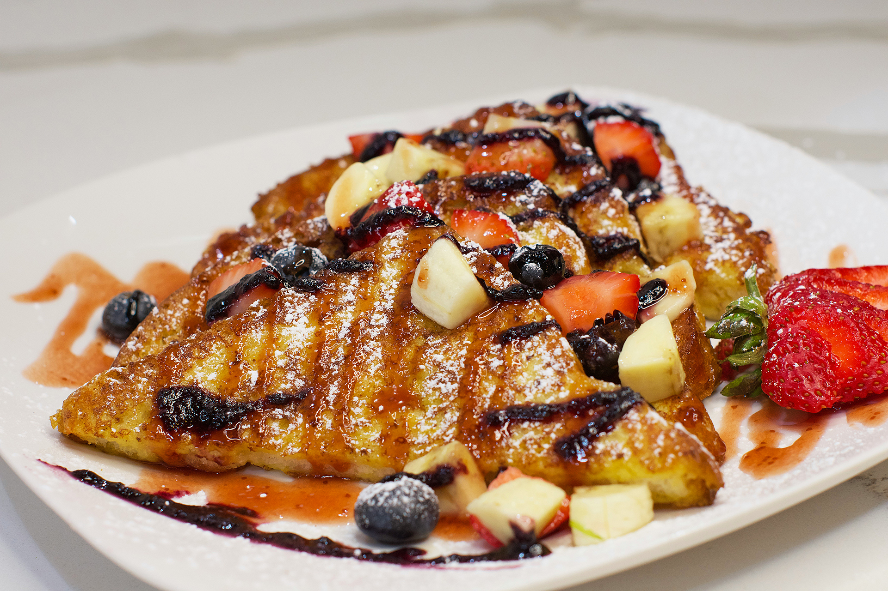

The Breakfast Breadline
Toast might seem like a simple snack, but it holds a surprisingly powerful place in kitchens worldwide. From the humble buttered slice to extravagant creations piled high with avocado, berries, or even fried eggs, toast has proven itself a versatile canvas for culinary creativity. Its golden, crispy texture combined with endless topping possibilities means toast can be tailored to suit any mood, time of day, or diet.
In recent years, toast has experienced a renaissance. Social media platforms are flooded with photos of colorful, artfully arranged toasts, inspiring home cooks and chefs alike to push the boundaries of this classic snack. From sourdough and rye to gluten-free and ancient grains, the bread choices alone are vast. The toast trend even helped fuel the rise of “brunch culture,” turning a simple breakfast staple into a status symbol for foodies everywhere.
But toast isn’t just about aesthetics or trends. Its enduring popularity also comes from its comforting simplicity. When life gets hectic, a warm piece of toast with a familiar spread can provide a quick, satisfying break. It’s the snack equivalent of a cozy hug—easy to make, easy to enjoy, and endlessly adaptable. Whether it’s a last-minute breakfast or a midnight craving, toast fits the bill.
However, toast lovers are divided on the perfect way to prepare it. Some swear by a light golden crisp, preserving chewiness inside, while others prefer their toast practically carbonized for that ultimate crunch. Then there’s the debate over toppings—classic butter vs. jam, sweet vs. savory, traditional vs. adventurous. This diversity is part of what keeps toast exciting and endlessly debatable.
So, whether you’re a purist who loves their toast plain or an adventurous snacker piling on every topping imaginable, one thing is clear: toast is more than just bread—it’s a snack that unites us all. As trends continue to evolve, toast’s simple appeal ensures it will remain a beloved staple for generations to come.
